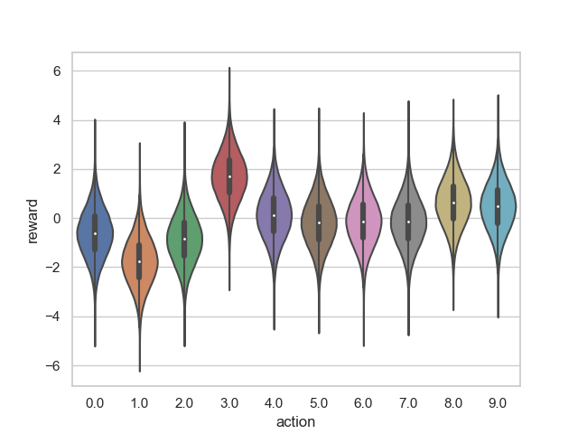
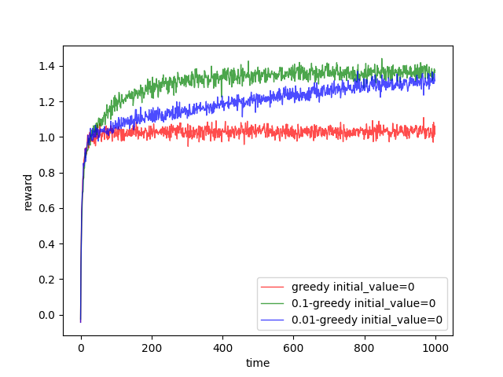
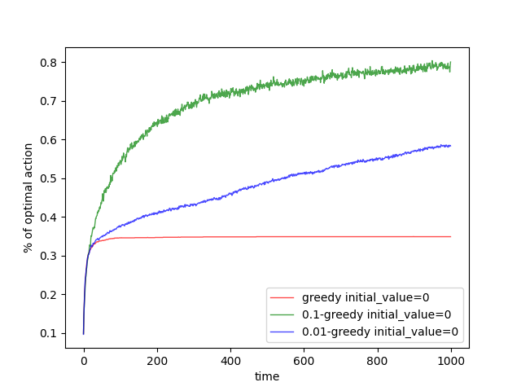
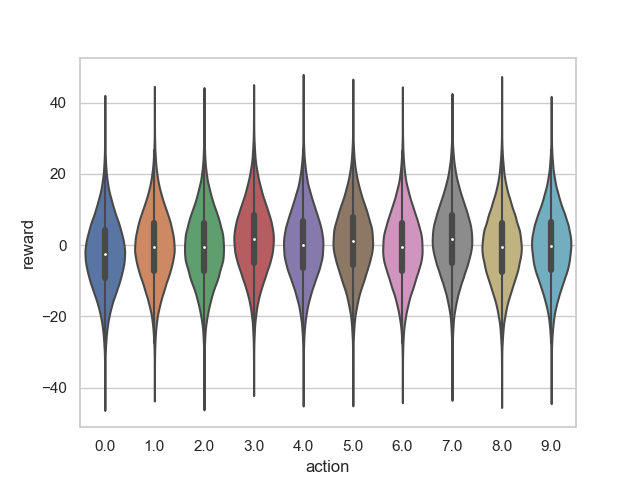
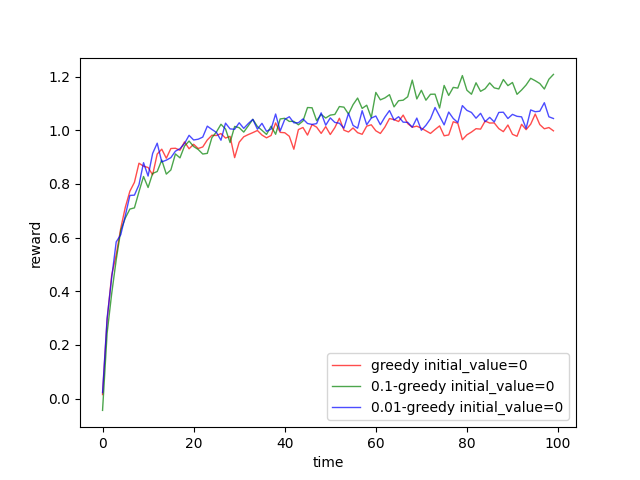
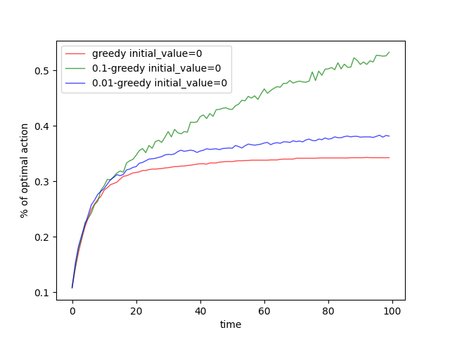

In the post ‘Action-value methods’, we have introduced ε-greedy method to maximize the value, the sum of rewards，in a long time run. In this post, we design some experiments to investigate the performance of ε-greedy of different ε. K-armed bandit problem is used here as the mission of the ε-greedy algorithm.
A Single Experiment
And k=10 is a good setting. Before we employ the action-value method, we should decide the true value of each action or in other words, we should decide the rule of generating reward for each arm. The value q⋆(a) is defined as the true value of action a for a=0,1,…,9(means which arm the agent selected). And the algorithm(agent) did not know this during the experiment. The value q⋆(a) is sampled from normal distribution with mean 0 and variance 1. Then each bandit produces reward with the stationary distribution with mean q⋆(a) and variance 1. So the reward distribution looks like:

for each action.
We employ 0-greedy which is just the greedy algorithm, 0.1-greedy, and 0.01-greedy algorithm for 1000 steps, and record their rewards for each step and if they act an optimal action.
Repeat 2000 times
A single experiment could not represent anything, so we repeat the single experiment described above 2000 times and average their reward and optimal action record for different ε respectively. and we got the following result:
‘time-value’ relation

‘time-percentage of optimal’ relation

Analysis of the Experiment
A large variance of reward
When each bandit has a large variance distribution, for example, the variance of the normal distribution is 10(mean is still 0), the distribution of each bandit looks like:

It’s very hard for us to find the optimal action among these large variance bandits, so is the agent. Then the agent needs more steps to explore the whole action space to estimate reward, the value, precise.
Variance is 0
When the reward is constant, the task is no more interesting for the reward of each action would never change. And the optimal solution is just the greedy strategy which maximizes the reward in the future.
However, the variance would never be 0. Firstly, if the reward is constant, this is never a reinforcement learning problem but a low-level logistical problem. And all the experiments based on strong assumptions such as the k-armed bandit is a stationary problem which means the reward of action has a stationary distribution. And the state does not change with time. When we weaken these assumptions or just some of them, exploration is always the way to make higher value in future time.
Behaviors of different ε
‘time-value’ relation
‘time-percentage of optimal’ relation
‘time-value’ relation first 100 steps

‘time-percentage of optimal’ relation first 100 steps

As the figures are shown above:
ε=0.1 receive more optimal action within the first 1000 steps,
its reward converged to 1.4 earlier than ε=0.01 and the greedy algorithm
ε=0.01 will receive more rewards as time goes to lager.
percentage of optimal action selected by the greedy algorithm would not change anymore
both the reward and percentage of optimal action increase faster of greedy algorithm and 0.01-greedy than 0.1-greedy
import numpy as np import matplotlib.pyplot as plt
classBandit(): def__init__(self, value_mean=0.0, value_var=1.0): """ bandit, reward is produced by a normal distribution with mean and variance; :param value_mean: mean :param value_var: variance """ self.value_mean = value_mean self.value_var = value_var
classKArmedBandit(): def__init__(self, bandit_generating_mean, bandit_generating_var, k): """ k-armed bandit and its reward based on normal distribution with mean and variance as: :param bandit_generating_mean: the mean of the distribution of bandit :param bandit_generating_var: the variance of the distribution of bandit :param k: how many arms """ self.k_armed_bandits = [] self.greatest_value_bandit = -1 bandit_value_array = [] for i in range(k): value_mean = np.random.normal(bandit_generating_mean, bandit_generating_var) bandit_value_array.append(value_mean) bandit = Bandit(value_mean, value_var=1.0) self.k_armed_bandits.append(bandit) self.greatest_value_bandit = np.argmax(np.array(bandit_value_array))
defrun(self): rewards = [] for bandit in self.k_armed_bandits: rewards.append(bandit.run()) return rewards
classKArmedBanditTestbed(): def__init__(self, repeat_times,n_step, bandit_mean, bandit_var, k): """ K-armed bandit testbed :param repeat_times: how many time we will do the experiments to get an average :param n_step: how many steps in each experiment :param bandit_mean: the mean of the distribution of each bandit :param bandit_var: the variance of the distribution of each bandit :param k: how many arms """ self.n_step = n_step self.repeat_times = repeat_times self.bandit_mean = bandit_mean self.bandit_var = bandit_var self.k = k
defvare_greedy(self, varepsilon): """ varepsilon-greedy method for different varepsilon :param varepsilon: a array of varepsilong such as [0,0.1,0.01] :return: average of reward and average of optimal action percentage """ varepsilon_size = len(varepsilon) average_reward = np.zeros((varepsilon_size,self.n_step)) percentage_of_optimal_action = np.zeros((varepsilon_size,self.n_step))
for i in range(self.repeat_times): kab = KArmedBandit(self.bandit_mean, self.bandit_var, self.k) for vare_i in range(varepsilon_size): vare = varepsilon[vare_i] value_estimation = np.zeros(self.k) value_estimation_times = np.zeros(self.k) reward_per_step = np.zeros( self.n_step) optimal_action_or_not = np.zeros(self.n_step) for step_i in range(self.n_step): rewards = kab.run() # exploration if step_i < 5or np.random.randint(0, 1000) < 1000*vare: action = np.random.randint(0, self.k) else: action = np.argmax(value_estimation) # update if value_estimation_times[action] == 0: value_estimation[action] = rewards[action] else: step_size = 1/value_estimation_times[action] error_in_estimation = (rewards[action]-value_estimation[action]) value_estimation[action] = value_estimation[action]+ step_size*error_in_estimation value_estimation_times[action] +=1 reward_per_step[step_i] = rewards[action] if action == kab.greatest_value_bandit: optimal_action_or_not[step_i] = 1
Koller, Daphne, Nir Friedman, Sašo Džeroski, Charles Sutton, Andrew McCallum, Avi Pfeffer, Pieter Abbeel et al. Introduction to statistical relational learning. MIT press, 2007. ↩︎